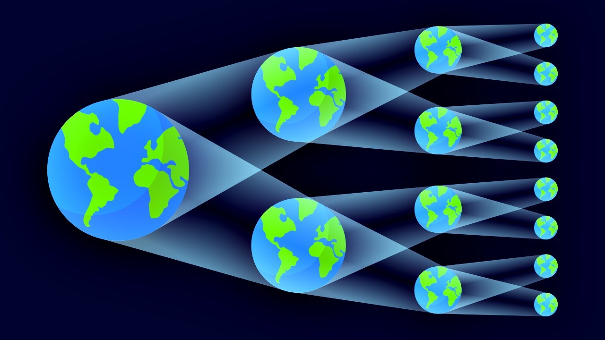
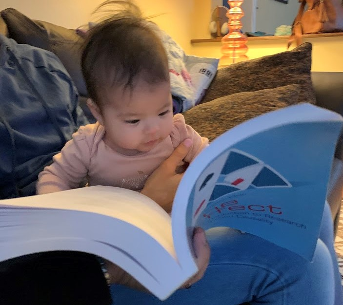

Introduction
What to expect this semester
Introduction
First of all, thank you for joining me this semester, we I expect we all will earn something new.
Why? well, while I have learned and implemented many of the methodologies we will see here today, there are a few I have yet to dive into.
Nevertheless, I hope you will enjoy, and learn as much as you can from this course, which has the purpose of:
Expose you to a large set of empirical econometric analysis techniques
Expose you to the application of some of this techniques to the analysis of Causal effects
But first, lets lay out the Rules of the game…
Grades
Your grade will consist on 4 elements
Participation 10%: As before, active participation is encourage, so reading the material before class is highly recommended.
Presentations 15%: Students will have two presentations during the semester (second half), based on suggested material (Syllabus) or other papers the students may be interested in.
The main requirement. The paper should implement any of the methodologies we will be covering in class.
The presentation should emphasize the Research question, assumptions used, methodology, and results. If possible also provide criticism to the paper.
Homework 25%: Homeworks will be provided for you to practice and implement the different methodologies discussed in class. They can be carried out individually or in groups (of 2). This will include making a brief description of the results.
Grades
Paper Project 50:
- Write a term paper that can be of two types:
Paper Replication: You can choose to write a replication paper on a methodological paper, or applied empirical paper.
In either case, the replication will have to extend the analysis of the original paper to a different setup (empirical paper), different software (if replication paper), or other extensions to the original analysis/methodology.
Research: A 20-25 pages paper where students answer a research question of their choice, using any of the methodologies presented in class. Standard structure of the paper applies.
- Presentation of the paper in class
Course Content
The course content will consist of two parts:
Part I: I will review and cover many of empirical methodologies that expand on the Linear Regression analysis we cover in Econometrics 1. This include:
Linear Regression: OLS (again), but with SE emphasis, and allowing for (too)many variables.
Semi- and non-parametric regressions: When you need things to be Flexible (but not too flexible)
CQuantile regressions: When you are interested in people beyond the mean (distributions)
UQuantile-Regressions, RIF-Regressions: When you are interested in the whole distribution
Nonlinear Models: MLE and GMM: When your models are nonlinear (in coefficients)
Course Content


\[MLE: Y|x \sim f(\theta)\] \[GMM: E(y-m(x))= 0\]
Course Content
The second part of the course aims to introduce Methodologies that have the goal of identifying Causal effects.
What do we mean with that? We specifically focus on cases when:
A change in T(reatment) (\(0 \rightarrow 1\)) has an impact in Y from \(y(0) \rightarrow y(1)\), because we manage use a design that makes everything else (\(X's \ \& \ \varepsilon's\)) constant.

Ideally you want to observe the same unit under two different Status! (Multiverse!)
Course Content
However, as we have discussed last semester, achieving this is hard. There are many factors that we may not be able to control. Thus we need to come-up with “cleaver” strategies to achieve something Similar.
- Randomization: When Treatment is generated at “random”. You can’t see All worlds, but its the closest.
- Panel Data and Fixed Effects: Some things are fixed, and you may be able to get “rid” of them if you see them often: Panel data, family effect, twins, etc.
- Instrumental Variables: Searching for Exogenous Variation to “simulate” random assignment. Even tho it may only capture “local” effects
- Matching and Re-weighting: If true twins do not exist, find people who are “observational twins”. Same life, same characteristics, different treatment and outcome. (or instead of people, distributions)
Course Content
- RDD-Regression Discontinuity Design: Use Jumps, and assignment rules. Use the fact that some times treatment is assigned around a threshold.
- Differences in Differences: Use changes across groups and time. DiD: Accounts for group differences and trends (but be aware of TWFE - when we absorb too much)
- Synthetic Control: Similar to Matching, you can create “synthetic” units, combining the information of multiple units. at the same time. And like DID, you can use that to identify effects.
Reading
- I have assigned many readings! But you do not need to read them all (but, you may benefit from it).
- At the very least, read one paper/chapter of the assigned readings.
- The main books: Casual Inference:The mixtape, The Effect, Mostly Harmless Econometrics, are all available online.
- Otherwise, I ll provide the corresponding -pdfs- on the class website.
